A = 1 + 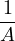
A = 1 + 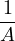  A2 - A - 1 = 0
A2 - A - 1 = 0Abstract.
Imagine the most dreaded math chapter from middle school and the concept that is least understood in high school and now combine the two. The infinite continued fraction is the result of placing fractions within fractions indefinitely. These fractions make appearances in math contests to highlight tricks for manipulating self-similar, infinite processes. However, these tricks make problematic assumptions that can lead to paradoxes. This talk will use continued fractions to highlight the non-intuitive nature of self-similar, infinite processes. A motivated method to approach these processes is provided. The talk includes recursive definitions of these processes and epsilon-delta style proofs. The talk ends by introducing continued fractions as an analytical theory and some interesting theorems are also discussed.
Continued Fractions come in many different flavours. There is an entire theory based off continued fractions and they where used by many great mathematicians in a variety of work in number theory and other areas of mathematics. Qualitatively, a continued fractions are objects that are generally described as fractions within fractions.
As you can see, the numerators and denominators of continued fractions can be more than numbers. They can have variables and can express functions. An interesting fun fact, mathematician Johann Heinrich Lambert was the first to prove that Pi was a irrational number by using the continued fraction expansion of the function tan(x). For this discussion, we consider a restricted definition of the Continued Fraction.
Definition 1.2. Simple Continued Fraction
A simple continued fraction is an infinite continued fraction which has 1’s for its partial numerators and positive integers for its partial denominators
where ai ∈ ℕ
There is a definition called the general continued fraction where partial numerators and denominators can be any integer (positive or negative). To add more variety, continued fractions have also been defined as compositions of linear transformations. The focus of this talk is not CF but rather to use CF as an example of infinite processes. So we restrict the definition.
We want an example of a continued fraction, so lets write down the simplest Simple Continued Fractions we could possibly have. It will consist of all 1’s.
If this is your first time seeing a continued fraction, I recommend trying to write out this continued fraction with pen and paper. Make sure not to peek at the typesetting of the fraction below.
How do we make sense of this fraction? The CF is a hard object to wrap your head
around, its self similar. If you tried writing out the fraction, you probably felt unsatisfied
because where ever you would stop to place the 3 dots, something would feel
incomplete (at least it did for me!). We can try to make sense of the fractions by
figuring out what it equals to. Is there a way to evaluate this expression so we
can get a nice and easy real number we could write out? The answer is yes.
We let A to be equal to the expression and observe a self similar nature of
A.
Let A = 1 + 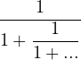 A = 1 + 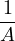 A2 - A - 1 = 0
Notice that A is self-similar because there is another A in the denominator. This reduced to solving a quadratic equation. We get
A reasonable assumption is that A is positive, so we consider the positive root
A = 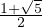 only. The trick used here is very clever and is commonly used in high school
math contests to quickly evaluate self-similar expressions (I personally used it multiple
times without a second thought). However, we did not provide any justification as to why
it is a valid trick. As it turns out, it is not always valid. Furthermore, this trick
cannot be used to evaluate expressions that are not self similar and so it is
limited.
An interesting coincidence we can see is that A is actually equal to the Golden ratio,
A = ϕ = 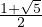. There is one more connection I want to make with this continued
fraction. Suppose we approach the evaluation of this expression in a different way. We
can truncate the expression at finite lengths and take the limit of the truncation. This
approach may be more obvious than the previous trick. These truncations are
known as the nth convergents. Here is a table of some of the convergents of
A:
| convergents | A1 | A2 | A3 | A4 | A5 |
| expression | 1 | 1 + | 1 + 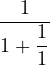 | 1 + 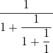 | 1 + 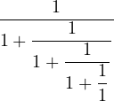 |
| evaluation | 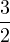 | 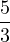 | see below | ||
Although evaluating each convergent seems to get increasingly difficult, we can use previous calculations to find the next convergent. Notice A5 = 1 + 1∕A4 = 1 + 3∕5 = 8∕5. This is important because if a convergent is An = 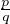, the next two convergents are An+1 = 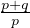 and An+2 = 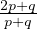. We make 2 important observations,
Is there a sequence that follows this pattern? Yes, the Fibonacci numbers! As a matter of fact, the nth convergent is the ratio between 2 consecutive Fibonacci numbers. Since we evaluated A to be the Golden ratio, what we just shown is that the ratio between consecutive Fibonacci numbers tends to the Golden ratio. Symbolically,
We see how just by studying the ”Simplest” continued fractions we were able to discover a lot of mathematics. Clearly there is something interesting going on with continued fractions.
There is an issue with the trick introduced in the last section. Although it is elegant, it makes the assumption that the expression converges. If the expression does not converge, the value of A is useless. Here is a classic example of when this trick fails.
The good thing is the trick works if the object we are studying converges. So if we show the Continued Fraction converges, we can use the trick, right? Well, we have one more complication that is specific to Continued Fractions.
Example 3.2. Converges to different values
Recall that we are working with Simple Continued Fractions. For this example, we
broaden our definition of Continued Fractions. Consider the following equalities.
It is true that at every finite step in the equalities hold. For this reason, it seems as if the same Continued Fraction converges to 2 values, meaning that 1=2. This cannot be true. How can we resolve this issue? We need to first pinpoint where the issues are arising from.
The previous section highlighted examples that exposed gaps in our understanding of the Continued Fractions. We will try to fill in the gaps by trying to make our treatment of Continued Fractions more rigorous. Here are some points to keep in mind.
This does not help us much since both roots are viable solutions. We turn to our second approach, the limit of nth convergents. We say that the limit of the nth convergent is equal to the continued expression. The point is that we associate an exact definition with our infinite process. Similar to ”seed values”, we can expect different behaviours for the same Continued Fraction with different definitions.
If we take the points made above as a checklist, by making sure we define a seed,
limiting process, and definition of Convergence, we can be confident that we will not run
into the issues of the last section. The discussion made in (2) and (3) are important and
come up in mathematics whenever infinity enters the picture. They can also
be the source of non-intuitive results that mathematicians seem to accept as
true. Try to think of some instances where you’ve come across something like
this.
The point made in (1) is more specific to the rest of this paper, I need it so we can define our own accept limiting process for Continued Fraction. The accepted limiting process for CFs is the nth convergent, and it can be seen as a top-down definition of the CF. We will construct a bottom-up approach to define CF. This is to avoid unnecessary notation. Luckly, in the example below, they will both be equivalent. We are now ready to formally prove the convergence of 1 + 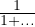
Definition 4.1. .
The Continued Fraction of 1 + 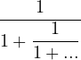 is defined as:
This definition is hardly generalizable to all CFs1but as long as we can accept it, that will make it sufficient for this discussion.
Example 4.2. Prove convergence of 1 + 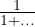 is Golden ratio
Proof. .
Let ϵ > 0. Choose N = -log ϕϵ > 0 (whenever ϵ < 1 ). Let n > N,
w.t.s: |an - ϕ| < ϵ
Consider,
| |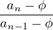| | = |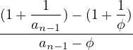| ; using def of an and identity of ϕ | ||
| = |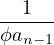| ; simplified expression | |||
| ≤ ; since for all k, ak ≥ 1 |
So,
| || | ≤ | ||
 |an - ϕ| |an - ϕ| | ≤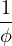|an-1 - ϕ| | ||
 |an - ϕ| |an - ϕ| | ≤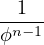|a1 - ϕ| | ||
| = 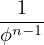|1 - ϕ| | |||
| = ϕ-n < ϕ-N = ϵ | |||
In the last part of the proof, qualitatively, we bound expression in an with an expression in an-1 and a factor of 1∕ϕ. We can further bound all ak’s by reducing the index of ak and multiplying a factor of 1∕ϕ. In the 2nd last line, I use the identity ϕ = 1 + 1∕ϕ.
It is hard to wrap your head around infinite processes. When trying to ask questions about the evaluation of an infinite process or the equality between 2 infinite processes, following seemingly valid operations can lead to contradictions. Our unconscious assumptions try to fill in the gaps in our understanding of infinity. Continued fractions are used as an analogy to demonstrate what it takes to fill in these gaps using mathematical rigour. We should approach all mathematical ideas involving infinity with this new mindset and think critically about the assumptions we make.
[1] Niven, I., Zuckerman, H. S., Montgomery, H. L. (1991). An introduction to the theory of numbers Ch-7. New York: Wiley.
[2] Mathologer Youtube Video, Infinite fractions and the most irrational number